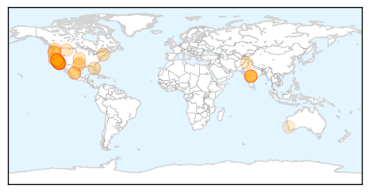

Measles
30-Day Web Trend
12 alerts, 3 warnings

30-Day Twitter Trend
0 alerts, 0 warnings

Article Locations
Article Confidences

Top Articles:
- 0.984
- Measles Outbreak In California Draws Attention To Importance Of Vaccination
- 0.978
- Santa Cruz health officials: Vaccinate your kids
- 0.977
- KATU.com - Portland News, Sports, Traffic Weather and Breaking News - Portland, Oregon
- 0.976
- Second measles case here linked to Disneyland outbreak
- 0.973
- 52 cases of measles linked to Disneyland outbreak confirmed
- 0.971
- Several Disneyland workers diagnosed with measles
- 0.969
- Several Disneyland Employees Diagnosed With Measles
- 0.959
- More Possible Measles Cases Investigated; Sharp Briefly Closes Clinic As Precaution
- 0.958
- Measles outbreak continues to spread as schools tell students to stay home
- 0.956
- Disneyland measles outbreak continues to spread
- 0.953
- Texas: Tarrant County resident measles positive, traveled to India
- 0.952
- Lane County confirms case of measles
- 0.948
- Several Disneyland employees diagnosed with measles
- 0.945
- 22-month-old girl is the latest to be hit by measles outbreak linked to Disney California
- 0.944
- Lane County measles case first in Oregon tied to Disneyland outbreak
- 0.943
- Measles update: Unvaccinated kids told to stay home from Calif. school
- 0.939
- Tarrant County resident diagnosed with measles
- 0.935
- Tarrant County resident tests positive for measles
- 0.933
- Vista clinic cleared of measles exposure
- 0.925
- Why measles are back, and how the illness spreads
- 0.922
- Measles Outbreak Hits Disneyland California, Spreads To 3 States
- 0.919
- School near Disneyland warns parents that student has measles
- 0.919
- School near Disneyland warns parents that student has measles
- 0.909
- School near Disneyland warns parents that student has measles
- 0.903
- Tarrant County resident returns from India with case of measles
- 0.886
- Northern Voices Online Disneyland employees diagnosed with measles
- 0.879
- Disney measles outbreak includes 5 theme park employees
- 0.864
- Disneyland measles outbreak prompts warning at high school
- 0.855
- Measles Outbreak - Story
- 0.833
- Tarrant County Resident Tests Positive for Measles
- 0.823
- Unvaccinated students dismissed from H.B. High after measles exposure
- 0.818
- Patient With Measles Might Have Exposed North Texans « CBS Dallas
- 0.813
- Five Disneyland Resort workers confirmed with measles
- 0.811
- Measles spread through Orange County
- 0.800
- Unvaccinated Students Told To Stay Home Over Measles Fear
- 0.791
- Tickborne Relapsing Fever endemic to the Bitterroot
- 0.756
- Unvaccinated students told to stay home over measles fears in California
- 0.747
- High School Sends Unvaccinated Students Home
- 0.716
- Several Disneyland workers diagnosed with measles
- 0.715
- Measles vaccination campaign to start on January 26 in Punjab
- 0.691
- Some SoCal students told to stay home over measles fears
- 0.688
- Measles Fears Prompt Huntington Beach Schools to Tell Unvaccinated Students to Stay Home
- 0.663
- California high school sends two dozen unvaccinated students home amid measles outbreak
- 0.653
- Student with measles at Calif. high school might have exposed others
- 0.653
- Student with measles at Calif. high school might have exposed others
- 0.638
- Unvaccinated students at Huntington Beach HS sent home amid OC measles outbreak
- 0.626
- City Health Department raising awareness on measles
- 0.603
- Officials: Measles Cases Linked to Disneyland Parks Up to 51
- 0.589
- Measles warning for passengers on Singapore flight to Perth
- 0.579
- Parents Who Shun Vaccines Tend To Cluster, Boosting Children's Risk : Shots
Showing top 50 articles...
Top Tweets:
-
No tweets found for Jan 20, 2015
Ebola
30-Day Web Trend
1 alerts, 0 warnings

30-Day Twitter Trend
0 alerts, 0 warnings

Article Locations

Article Confidences

Top Articles:
- 1.000
- All schools in Guinea that were closed amid Ebola to reopen on Monday
- 1.000
- Woman pulled off United flight at Newark does not have Ebola
- 1.000
- Plane passenger hospitalized in New Jersey with Ebola symptoms
- 1.000
- Mali declared Ebola free as West Africa continues to recover
- 1.000
- China’s Aid to Mali Helped Clean the West African Country of Ebola
- 1.000
- Ebola leaving thousands of children orphaned
- 0.999
- African Countries 'Vital' in Fight Against Ebola
- 0.999
- Traveler's Ebola scare triggered a now-familiar drill
- 0.999
- Traveler's Ebola scare triggered a now-familiar drill
- 0.999
- Traveler's Ebola scare triggered a now-familiar drill
- 0.999
- UN: African Countries 'Vital' in Fight Against Ebola
- 0.999
- Is this the beginning of the end for the Ebola outbreak in West Africa?
- 0.999
- World Vision joins $250m Ebola vaccine initiative as it continues to address stigma
- 0.999
- UN: African Countries 'Vital' in Fight Against Ebola
- 0.998
- Ebola Centers in Liberia Nearly Empty
- 0.998
- Outbreak Resembles 'Scattered Embers'
- 0.998
- Mahama says there are signs Ebola will be defeated
- 0.998
- Number of new Ebola cases declines: UNMEER head
- 0.998
- What Will It Take?
- 0.998
- Ebola crisis: Guinean priests beaten up over health fears
- 0.998
- Schools reopen as West Africa turns page on Ebola epidemic
- 0.997
- Will Liberia Be Ebola Free In February?
- 0.997
- Schools reopen in Ebola-hit Guinea; attendance 15%
- 0.997
- Davos: Western world ‘vulnerable’ to epidemics, warns Ebola expert
- 0.997
- Woman On Brussels To Newark Flight Did Not Have Ebola, Officials Say « CBS New York
- 0.996
- India-born Ebola fighter to watch Obama speech to Congress
- 0.996
- Are We Keeping Ebola Away?
- 0.996
- Airplane passenger with Ebola symptoms hospitalized in New Jersey
- 0.995
- Airplane passenger with Ebola symptoms hospitalized in New Jersey
- 0.994
- Ebola: 244 Patients Found Through House-to-House Search
- 0.994
- Airplane passenger does not have Ebola, state says
- 0.994
- Sick West African health worker not being transferred to long-term care in N.J., hospital says
- 0.994
- Sick Airline Passenger Flying From Sierra Leone Taken to Hospital
- 0.994
- Ebola tests at East Surrey Hospital for Africa aid worker
- 0.994
- Ebola Outbreak Orphaned Thousands Of Children--UNICEF : SCIENCE : Design & Trend
- 0.994
- Schools reopen as Ebola slows down in W. Africa
- 0.993
- Airplane Passenger with Ebola Symptoms Hospitalized in New Jersey
- 0.992
- SA nurses fearless as they face Ebola
- 0.992
- Sick Passenger Taken Off Flight in Newark After Traveling From Sierra Leone Does Not Have Ebola: Hospital
- 0.992
- Ebola worsens health system in Sierra Leone « Awoko Newspaper
- 0.990
- Best And Worst Ebola Fundraisers To Benefit Africans
- 0.989
- UCSF’s Ebola treatment center is a permanent commitment to treating highly infectious diseases
- 0.987
- Genetic Changes in Ebola Virus in West African Outbreak Could Hinder Potential Treatments
- 0.987
- JUJU! at Upstairs at the Ritzy raises money to fight Ebola
- 0.985
- The Economy in Africa Is Not Too Shaken Off by Ebola Virus
- 0.983
- No secret to curing Ebola in West Africa
- 0.981
- Danish PM visits Sierra Leone in solidarity
- 0.980
- Global Communities opens new burial site for Ebola victims near Monrovia
- 0.980
- Community gathers to protest violence
- 0.980
- Miscommunication keeps Guinea students from Ebola-free schools
Showing top 50 articles...
Top Tweets:
- 0.962
- UN Ebola chief calls for final funding push to defeat virus in west Africa: Ebola treatment cen...... http://t.co/LuQ0yo3QJW
- 0.962
- RT: Briefing by SRSG (11 am) on public health crisis from Ebola virus outbreak. WATCH live http://t.co/8tI6bW2bKu
- 0.956
- Even though Ebola cases have dropped in West Africa, the virus continues to cripple these economies via http://t.co/OyRIdRAd86
- 0.945
- Je Suis Fighting against Ebola africaagainstebola ebola MakeHistoryCute http://t.co/76l8OWKFyA
- 0.940
- Ebola Update: 21,614 confirmed, probable & suspected cases reported in 3 most affected countries, with 8,594 deaths. EbolaResponse
- 0.794
- Critical Medivac capabilities for Ebola health care workers have been funded by's TackleEbola SOTU
- 0.792
- Ebola Virus Changes Over Time, May Thwart Drugs, Study Says http://t.co/fuK4cTrmnQ
- 0.738
- Todays' news pouch avianflu avianinfluenza Ebola EbolaResponse MERS birdflu Antimicrobial http://t.co/knbVXKtiGl
- 0.643
- “Ebola Health Care workers need our support more than ever.” -Dune Ives, at the TackleEbola SOTU breakfast.
- 0.622
- RT: Schools reopening as WestAfrica turns page on Ebola epidemic http://t.co/DcLvy0mMtT
- 0.572
- Ebola. People who die from the disease could be only a fraction of the number who go hungry from it http://t.co/4VsUzjITvM @TheAtlantic
- 0.559
- Woman who worked with Ebola patients tested at NJ hospital http://t.co/amycResrcv
- 0.549
- This epidemic is not over. The end of Ebola is only possible if the international community continues to come together. SOTU TackleEbola
- 0.518
- The number of people who die from Ebola could be only a fraction of the number who go hungry from it. TackleEbola http://t.co/DkcwM3dwiY
- 0.518
- RT: Ahead of the SOTU, Ebola health workers express hope to see more from public health http://t.co/3gAyqge3tH TackleEbola
- 0.514
- RT: .@jfreewright: the $10k my foundation invested in 1 Sierra Leone district was equal to their entire pre-Ebola health budg…
- 0.512
- Yaya Touré is playing for Cote d'Ivoire at AFCON today. And he's backing the health workers scoring against Ebola http://t.co/pWuJLX7o4C